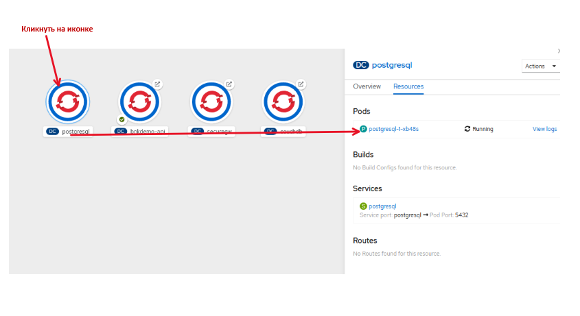
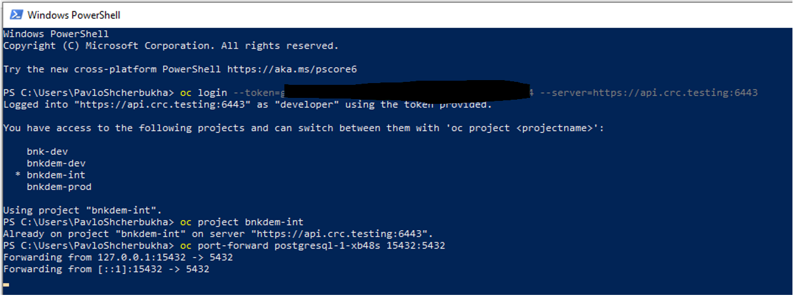
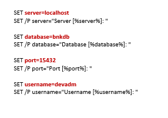

Целью даной работы является демонстрация возможностей подключения к БД postgres на платформе OpenShift.
schema.sql DDL скрипт по созданию схемы в БД Postgres
drop-schema.sql
DDL скрипт по каскадному удалению схемы из БД Postgres
table.sql DDL скрипт по удалению и созданию таблиц
cust_data.iql
DML скрипт по загрузке тестовых данных в таблицы
runpsql.bat Командный файл для запуска psql для выполнения единичных команд DDL или DML
runpsql_f.bat
Командный файл для запуска последовательности DDL или DML команд из *.sql файла, который передается в виде параметров.
БД postgres работает по собственному протоколу. поэтому для досутпа к серверу БД снаружи openshift нужно подключиться к pod, в который задеплоена БД и "проброс порта".
Для определения pod нужно клинкнуть на иконке с postgressql и скопировать название pod: pic-1

pic-1
Дальше, запускаем powershell и логинимся в openshift
oc login --token=your token --server=openshift api url
oc project YourProjectName
oc port-forward postgresql-1-xb48s 15432:5432
В результате успешного проброса порта получим такой экран: pic-2 
pic-2
Перед запуском нужно проверить, и, в случаэ необходимости исправить параметры подключения к базе данных в файлах runpsql.bat, runpsql_f.bat

pic-3
Запускаем cmd и поочередно выполняем скрипты:
## создание схемы
runpsql_f.bat schema.sql
## создание таблиц
runpsql_f.bat table.sql
## загрузка начальных данных
runpsql_f.bat cust_data.iql
лог работыв DDL-скриптов показан ниже
C:\PSHDEV\PSH-WorkShops\THINK2020\repo\wa\think2020-bnkapi\src\ddl-bnk>dir
Volume in drive C is Windows
Volume Serial Number is 2AC2-DFD8
Directory of C:\PSHDEV\PSH-WorkShops\THINK2020\repo\wa\think2020-bnkapi\src\ddl-bnk
25.07.2020 16:11 <DIR> .
25.07.2020 16:11 <DIR> ..
18.07.2020 21:51 567 cust_data.iql
25.07.2020 16:11 24 drop-schema.sql
20.07.2020 16:40 1 257 runpsql.bat
20.07.2020 15:32 1 262 runpsql_f.bat
25.07.2020 15:53 133 schema.sql
19.07.2020 12:42 2 349 table.sql
6 File(s) 5 592 bytes
2 Dir(s) 242 398 846 976 bytes free
C:\PSHDEV\PSH-WorkShops\THINK2020\repo\wa\think2020-bnkapi\src\ddl-bnk> runpsql_f.bat schema.sql
===================BEFORE RUN SCRIPT =======================
for openshift: oc login --token=[ your token ] --server=https://api.crc.testing:6443
for openshift: oc port-forward [pod] 15432:5432
=====SET CLIENT CONSOLE UTF-8
SET client_encoding = 'UTF8';
=============================
Server [localhost]:
Database [bnkdb]:
Port [15432]:
Username [devadm]:
CREATE SCHEMA
GRANT
GRANT
GRANT
Press any key to continue . . .
C:\PSHDEV\PSH-WorkShops\THINK2020\repo\wa\think2020-bnkapi\src\ddl-bnk>runpsql_f.bat table.sql
===================BEFORE RUN SCRIPT =======================
for openshift: oc login --token=[ your token ] --server=https://api.crc.testing:6443
for openshift: oc port-forward [pod] 15432:5432
=====SET CLIENT CONSOLE UTF-8
SET client_encoding = 'UTF8';
=============================
Server [localhost]:
Database [bnkdb]:
Port [15432]:
Username [devadm]:
psql:table.sql:1: ERROR: table "b_cust" does not exist
psql:table.sql:2: ERROR: table "b_accounts" does not exist
psql:table.sql:3: ERROR: table "b_cards" does not exist
CREATE TABLE
CREATE INDEX
CREATE INDEX
CREATE TABLE
CREATE INDEX
CREATE TABLE
CREATE INDEX
Press any key to continue . . .
C:\PSHDEV\PSH-WorkShops\THINK2020\repo\wa\think2020-bnkapi\src\ddl-bnk>runpsql_f.bat cust_data.iql
===================BEFORE RUN SCRIPT =======================
for openshift: oc login --token=[ your token ] --server=https://api.crc.testing:6443
for openshift: oc port-forward [pod] 15432:5432
=====SET CLIENT CONSOLE UTF-8
SET client_encoding = 'UTF8';
=============================
Server [localhost]:
Database [bnkdb]:
Port [15432]:
Username [devadm]:
SET
INSERT 0 1
INSERT 0 1
INSERT 0 1
INSERT 0 1
idcust | first_nm | last_nm | email | tin | phone | status | dtopen | dtclose | idt | itm | mdt | mtm
--------+----------+-----------+---------------+------------+-------+--------+------------+---------+------------+-----------------+-----+-----
1 | Petro | ERSHOW | pet@gmai.com | 1234567890 | | O | 2020-07-25 | | 2020-07-25 | 13:15:32.236563 | |
2 | Semion | Markovich | sem@gmai.com | 1234567891 | | O | 2020-07-25 | | 2020-07-25 | 13:15:32.240664 | |
3 | Shlioma | Mimi | mimi@gmai.com | 1234567892 | | O | 2020-07-25 | | 2020-07-25 | 13:15:32.243954 | |
4 | Химка | Суха | mimi@gmai.com | 1234567892 | | O | 2020-07-25 | | 2020-07-25 | 13:15:32.247374 | |
(4 rows)
Press any key to continue . . .
C:\PSHDEV\PSH-WorkShops\THINK2020\repo\wa\think2020-bnkapi\src\ddl-bnk>
Схема данных создана.